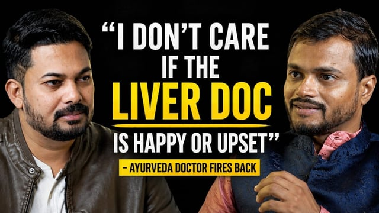

I tried Agnikarma before I interviewed the doctor. Here's my honest take.
 By Sagar Khapre · 30 November 2026 · 5 min read
By Sagar Khapre · 30 November 2026 · 5 min readA heated metal rod. A precise point on the body. A few seconds of heat. And people walking out saying their pain is gone.
That's Agnikarma, one of Ayurveda's oldest procedures. When I invited Vaidya Pankaj Tiwari (BAMS, MD Ayurveda), who has been practising Agnikarma and Viddhakarma since 2017, to my podcast, I didn't want to just ask questions from a chair. So I went to his hospital first and tried it on myself.
Here's what I learned, and where I honestly stand.
I don't put a claim in front of my audience unless I've checked it first.
That's why I tried Agnikarma before recording a single question with Vaidya Tiwari.
As I said at the start of the episode: "Before this podcast, I visited his hospital. I experienced his technique myself. I saw with my own eyes how Agnikarma actually works."
Here's where I stand: Ayurveda and modern medicine should not be enemies. Patients deserve honest answers from both. If a centuries-old method helps someone's pain, it deserves proper study, not mockery. And where it doesn't work, practitioners should say so honestly.
My advice: go only to a qualified Ayurveda doctor, ask what evidence exists for your specific problem, and never stop your regular treatment without talking to your doctor.
— Sagar Khapre
What is Agnikarma?
In simple words, Agnikarma is a controlled heat therapy. The practitioner heats a metal rod, called a shalaka, and touches it briefly on specific points around the painful area. It is mostly used for long-standing pain in joints, heels, the back and the neck, and for problems like corns and warts.
It is often done along with Viddhakarma, where fine needles are used on specific points.
Agnikarma
- Uses controlled heat from a metal rod (shalaka)
- Applied for a few seconds on specific points
- Commonly used for chronic joint, heel and back pain, corns and warts
Viddhakarma
- Uses fine needles
- Inserted at specific points
- Often combined with Agnikarma for pain
Does it actually work?
This is the question everyone asks, so here's an honest answer.
There is published research. A 2015 study in the journal Ayu on knee osteoarthritis concluded that Agnikarma is an effective non-drug, para-surgical procedure for pain management in knee osteoarthritis. Other studies have looked at heel pain from plantar fasciitis, often with groups of around 40 patients.
But most of these studies are small, and even researchers say that comparative studies with modern physiotherapy are still limited. So the fair summary is: promising for pain, but it needs bigger, stronger studies.
"Ayurveda and modern medicine should not be enemies. Patients deserve honest answers from both."— Sagar Khapre
The "no evidence" debate
Critics like "The Liver Doc" have said Ayurveda has no evidence. In our episode, Vaidya Tiwari responded by talking about the more than 5,000 cosmetic cases he says he has treated, and the copper Agnikarma shalaka he designed, which he says is patent-pending.
His own view was refreshingly practical: a doctor's goal should be to get the patient well quickly without side effects, whatever the system of medicine, instead of wasting everyone's time criticising each other.
I didn't record that episode to pick a side. I recorded it so you can hear both the claim and the questions, and decide for yourself. That's what this podcast is for.
Before you try it
- Go only to a qualified practitioner. This is heat on your skin. It must be done properly, with hygiene.
- Get a proper diagnosis first. Know what is causing your pain.
- Ask for honest expectations. How many sittings? What if it doesn't help?
- Don't stop your regular treatment without talking to your doctor.
Want the full story?
Watch the complete conversation.
Unscripted. No filters. I tested it before I asked about it.

▶Watch nextNew episode every week. New take every Monday.
This article is for information only and is not medical advice. Please consult a qualified doctor for any health problem. Sources: Ayu journal (2015), AYUSHDHARA (2023), Journal of Clinical and Diagnostic Research (2026), Sagar Khapre Are Baapre episodes.